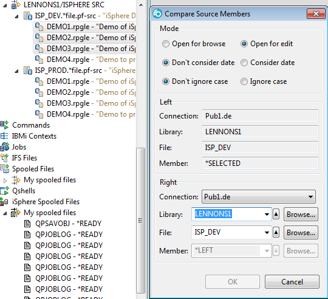

Source File Compare/Merge Editor
The Compare/Merge Editor allows you to compare and merge source
physical file members. The results of the compare are shown in left
and right panes and you can easily copy some or all of the differences
from the right pane to the left pane.
To compare/merge source physical file members:
- In the Remote Systems Explorer open the context menu (right
click) of a source physical file member. This is the source file that
will be opened in the left pane.
- It is also possible to launch the compare editor from the context
menu of an Lpex editor. Open the context menu and select
"Source -> Compare..." to do so. There is no "Edit" option when then
compare editor is started from there.
- Select menu item "iSphere Compare Editor".

Set the Mode for the compare:
- Use "Open for browse" or "Open for edit" to specify how the
left pane of the compare opens.
- Use "Don't consider date" or "Consider date" to specipy if
the date field in each source line will be used in the compare.
- Use "Don't ignore case" of "Ignore case" to specify if the
compare should be case sensitive of insensitive.
- Use "Two way compare" to compare two source members.
- Use "Three way compare" to include an ancestor to the source
in the right pane.
Note that in the "Left" section the name of the
source member for the left pane is specified and cannot be changed.
In the "Right" section the Library, File and Menber have been
defaulted to the "Left" values.
Change as needed
to specify the source member that is to be compared to the source
member in the "Left" section.
Click the [OK] button to start the compare.
The compare tab opens, showing the differences.

There are 4 buttons in the top right corner if you opened the
left pane for browse, and 6 buttons if you opened it for edit. Use
these buttons to move from change to change, and to copy lines from the
right pane to the left pane. (Hover over each button for help text.)
Today there are a couple of restriction to know about:
| Note: The date of all source lines is
set to the current date, when "Don't consider date" is selected
and the member is saved from the iSphere Compare/Merge editor.
This problem cannot be fixed for WDSC 7.0 and RDi 8.0, due to
restrictions in the Eclipse compare support. |
| Note: It is impossible to exclude a range
of columns from source compare, due to restrictions in the Eclipse
compare support. |
See these links for more details:
https://bugs.eclipse.org/bugs/show_bug.cgi?id=382427
https://git.eclipse.org/r/#/c/9004
The Don't consider date (ignore date) option is also available from the context menu of the
compare editor:
Selecting Multiple Members at Once
Two Members
If two members are selected at once, the first member is the Left
member and the second one is the Right member.
The members can
be switched with the switch member button located between the "Left"
and "Right" member sections:
Three or More Members
This is a special case where you want to compare members of the
same name in different library or source file. For example, comparing
members at the development level with those in production. You have to
enter the specifications in the right pane only once.
Consider this example where we want to compare three members in
a development library with the same three member in the production
library.
We have highlighted the three members in the RSE view, right
clicked, and clicked "iSphere Compare Editor".

In the "Left" section the member is set to *SELECTED and cannot
be changed. This means that it will be replaced successively by the
member names that have been selected in the RSE view, and each will be compared
to the same member in the "Right" section.
In the "Right" section the Connection, Library or File may be changed,
but the name of the right member is set to *LEFT and cannot be
changed.
To compare to the production libary, we set the "File"
field to ISP_PROD and click [OK]. A compare is run for each selected
member and a tab opens for each member where there are differences. In this example, there are changes only in DEMO1 and DEMO3 so there are two compare tabs. There are no changes in DEMO2.
| Note: The information message that pops up
when there are no differences between the members is part of the
Eclipse compare framework and cannot be disabled with the current
Eclipse support. |